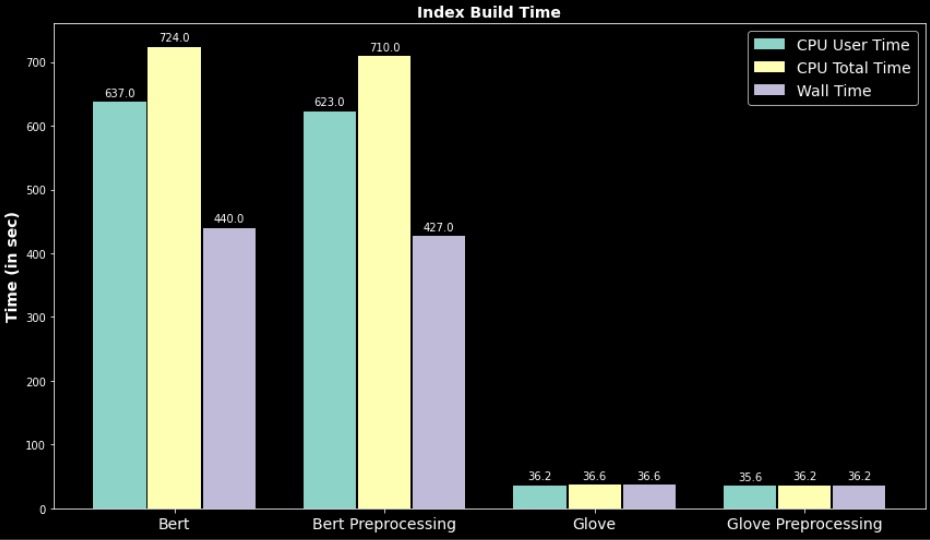

An Information Retrieval System
(through emails), (used Python)
Roadmap & Architecture
Architecture
We have chosen an architecture similar to the microservices architecture where we
have broken down each functionality to it's smallest component.
Our dataset choice
- We have implemented an Information Retrieval system to search for relevant emails from a dataset of Enron
Corporation. Their emails were leaked into the public and it was reviled that they were fraud organisation.
- We chose this dataset as it had a lot of emails and they were generic and formal which gave us a
well-paved way to find a lot of words in our pretrained embeddings corpus.
Loading the dataset
The dataset that we have used here is a dataset containing multiple emails.
This dataset is popularly available and free to use. We have a global variable document which is a list of strings where each string corresponds to an email. The email is broken at \n and queried as independent sentences.
Pre-processing the Data
We have used the stop words and lemmatizers from nltk library itself for our preprocessing. A function
pre-process has been used for preprocessing each individual string of the mails.
- In the function , first we convert all the strings to lower case.
- Then we sanitize our emails ,i.e., remove unwanted special characters, blank spaces etc and keep our
input limited to the english characters and numbers.
- Then we remove the existing stopwords in the string and lemmatize our string.
- It finally returns our pre-processed string.
Embedding our data
Once we have our pre-processed data, we need a way to determine the relevance of specific strings among each
other. For this , we used 2 different types of pretrained embeddings and compared their results as well :
- BERT Embedding
- Glove Embedding
- We iterate through each mail here, and embed them using bert first. We then store it in a pickl file , to
not only help with the storage size but also for a quicker and faster retrieval.
- We iterate through each mail here, and embed them now using glove. We then store it in a pickl file , to
not only help with the storage size but also for a quicker and faster retrieval.
- For testing purposes , we have also stored both pre-processed and normal data from the dataset. This
helped us understand what difference the preprocessing makes , and how it affects our performance .
Searching for a string
Now that we have our embedded dataset ready , we are good to go for searching.:
- We take in the query string from the user.
- Once again , we preprocess the query using the same preprocess function that we have used to preprocess
our dataset.
- Now, we run the embedding on our query. After this step, we have both our query and dataset in the
embedded form.
- Now , we calculate the cosine scores between each string in the email and our string , in a dynamic
array.
- We list out the queries , their cosine scores , the email in which the query was found , and the line in
the email at which the query was found. These are listed out in the descending order.
- Our function uses a default argument of 3 results to be listed out, however, we can add it in the query
function to get more query results.
Libraries Used
- datasets : This has been used to get our email corpus
- nltk : This has been used for
pre-processing our dataset. We used it to lemmatize
our
dataset and remove the stop words from it.
- numpy : This library has been used to work with arrays and
apply linear algebra concepts.
- pickle : This has been used to store our built index in
a .pkl file,
- mxnet : This has been used so that we can interface the
gpu using cuda library. This results in
reduction
of processing time from 4h 53min (Colab CPU) to 7mins (Nvidia Tesla T4).
- gluonnlp : This was a dependency for mxnet to interface with cuda.
- bert-embedding : This has been used to get the pretrained bert embeddings of our words.
- re(regex) : This is a regular expression library to work on a
set of strings.
Data Structures and Algorithms with their Justification
We have majorly used 3 data structures:
-
String : It is used in multiple function calls and instances. This data type forms the basis of our
dataset.
Justification: From query to the email output almost everything is a sequence of characters, String
is most obvious structure to use in such cases. They can be efficiently managed and can be split by space to
get
-
Individual words to remove stopwords, and find embeddings
- bert-embedding gets strings and finds each embeddings of each word in it.
- glove embeddings are stored in a dictionary which have words in the form of strings as keys for
indexing.
-
Individual sentences to find the most similar ones
-
We have queried for similarity with each sentence and this means to find each sentence which is very
efficient and convenient once we use strings.
-
Lists : It has been used to store multiple strings. Our corpus is made up of a list of strings.
Justification: Lists make it very convenient to handel large dimensional data, the embeddings of each
word is a large (300, 768) dimentional data. The usage of lists help us by:
-
Finding Cosine Score is very streamlined when we use lists.
-
numpy library has inbuilt function to find the dot product which takes a list as input.
-
Dividing the cosine by the magnitude of the large embedding is easily possible by numpy making the
process efficient and convinient.
-
Sorting the resultant cosing scores
-
Cosine scores are returned as an array where we need to sort them to get the top scores. This is
most conviniently and efficiently done in the data structure of array. This is one of the
functonality of numpy, streamiling the task.
-
Dictionary : This data structure has key and value pairs where the key in the structure gives value.
Justification : We have used this for creating our references from line to email. This is used to
streamline and make the structure more readable and easier to access.
-
Dictionary makes our indexing bound to not only numbers, it enables us to use string references to
access the data.
-
We have an index reference dictionary which maps line number in the corpus to the email it belongs and
the start line number of the email, if we were to do it in an array, we would have to search through an
array which would have been linear or at best logarithmic whereas, in a dictionary, we have
near-constant access time.
-
Dictionary of Lists: In this data structure we have a dictionary mapping to a list.
Justification : The dataset is loaded in 3 parts Test, Train and Validation, where
each is a dictionary having email_body and subject_line for each mail, so we have a list of
mails and their corresponding subject line split into test, train, and validation, for storing this the best
data structure is a dictionary mapping to a list.
This kind of usage makes the structure very intuitive, as the people who will be using this will be new and
an array structure will not intuivitively give them understanding, what index is subject and what is mail
body.
Run-Time Analysis of our Search Engine:
Building the Indexes with and without preprocessing for both the embeddings, we found the following :
-
Preprocessing is actually faster in processing as it reduces the length of words to process because it
discards words not in the embeddings, BERT does a better job as it tries to find the embeddings of
subwords to find the meaning, rather than just discarding the sentence.
-
BERT is highly parallel as the CPU user time is higher than the wall time, meaning that CPU worked more
time that what elapsed in the real word, this is because the CPU is multithreaded.
The graphical analysis is shown below :

Here we can clearly see the difference of time taken by models:
-
The major difference in index building time in BERT and Glove is because for Glove we are reading
the Embeddings from the dictionary, whereas for BERT we have to find the embeddings which is
compute intensive. This is highly parallelized due to this implementation on GPU.
-
The difference in the query search time is very minuscule as here we are iterating through the
Index and finding for the cosine score. Since glove doesn't have embeddings for every word it
skips maky sentences in the dataset which makes it lose information, decreasing the quantum it
has to traverse.